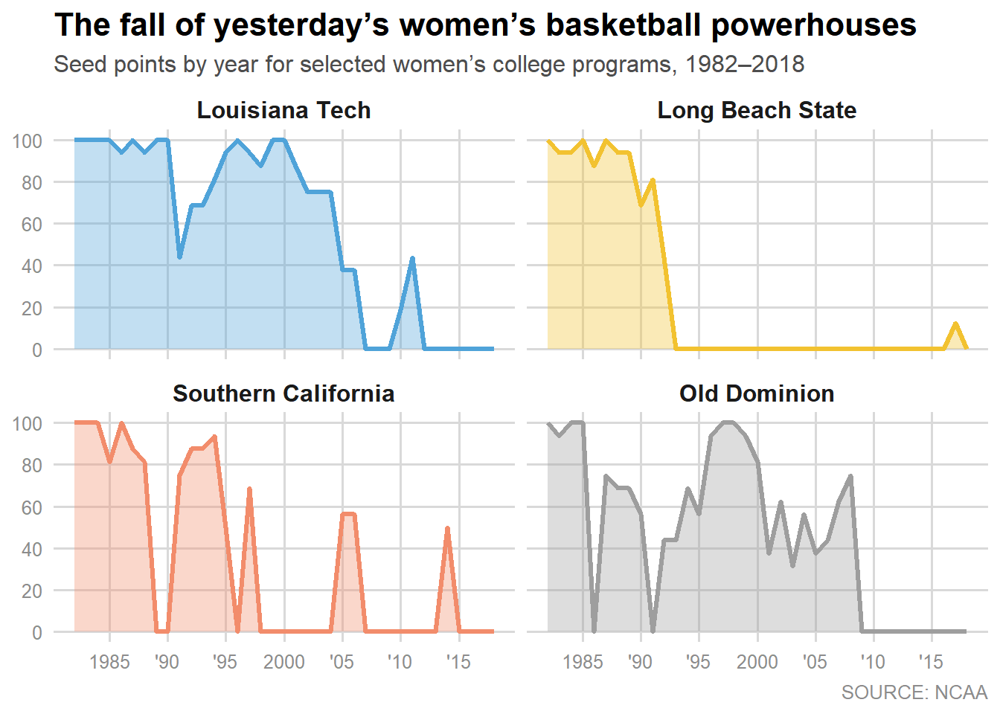

# 0) Load required packages
library(tidyverse)── Attaching core tidyverse packages ──────────────────────── tidyverse 2.0.0 ──
✔ dplyr 1.2.0 ✔ readr 2.2.0
✔ forcats 1.0.1 ✔ stringr 1.6.0
✔ ggplot2 4.0.2 ✔ tibble 3.3.1
✔ lubridate 1.9.5 ✔ tidyr 1.3.2
✔ purrr 1.2.1
── Conflicts ────────────────────────────────────────── tidyverse_conflicts() ──
✖ dplyr::filter() masks stats::filter()
✖ dplyr::lag() masks stats::lag()
ℹ Use the conflicted package (<http://conflicted.r-lib.org/>) to force all conflicts to become errorslibrary(ggplot2)
library(here)here() starts at D:/Github/Lianglai-portfolio# 1) Read the FiveThirtyEight/NCAA tournament history dataset
raw <- readr::read_csv(
here("presentation-exercise", "ncaa-womens-basketball-tournament-history.csv"),
show_col_types = FALSE
)
# 2) Keep only the four programs shown in the original figure
# (Note: in the dataset, Long Beach State is labeled as "Long Beach St.")
schools_keep <- c(
"Louisiana Tech",
"Long Beach St.",
"Southern California",
"Old Dominion"
)
# 3) Build the plotting dataset with the required columns:
# year (1982–2018), school, seed_points (0–100)
plot_df <- raw %>%
# Limit to the target time window and selected schools
filter(Year >= 1982, Year <= 2018, School %in% schools_keep) %>%
# Keep only what we need and standardize names
transmute(
year = Year,
school = School,
seed = as.numeric(Seed)
) %>%
# Convert NCAA seed (1 is best, 16 is worst) into a 0–100 "seed points" scale
# Higher seed_points = better seed / stronger tournament position
mutate(seed_points = (17 - seed) / 16 * 100) %>%
select(year, school, seed_points) %>%
# Fill in missing years for each school (years without a tournament appearance)
# so the line/area sits at 0, matching the look of the FiveThirtyEight figure.
complete(
year = 1982:2018,
school = schools_keep,
fill = list(seed_points = 0)
) %>%
# Clean up the displayed school name and set facet order
mutate(
school = recode(school, "Long Beach St." = "Long Beach State"),
school = factor(
school,
levels = c(
"Louisiana Tech",
"Long Beach State",
"Southern California",
"Old Dominion"
)
)
)
# 4) Colors chosen to resemble the original FiveThirtyEight palette
cols <- c(
"Louisiana Tech" = "#4FA3D9",
"Long Beach State" = "#F2C230",
"Southern California" = "#F28C6B",
"Old Dominion" = "#9E9E9E"
)
# 5) Recreate the chart: area + line, faceted into a 2x2 grid
p <- ggplot(plot_df, aes(x = year, y = seed_points, color = school, fill = school)) +
# Lightly filled area under the line
geom_area(alpha = 0.35, linewidth = 0) +
# Outline line on top of the area
geom_line(linewidth = 1.2) +
# Four small multiples (2 columns -> 2x2 layout)
facet_wrap(~ school, ncol = 2) +
# Apply manual colors for both line and fill
scale_color_manual(values = cols) +
scale_fill_manual(values = cols) +
# Match the 0–100 y-axis scale and tick spacing
scale_y_continuous(limits = c(0, 100), breaks = seq(0, 100, 20)) +
# Match the x-axis labeling style (with abbreviated years)
scale_x_continuous(
breaks = c(1985, 1990, 1995, 2000, 2005, 2010, 2015),
labels = c("1985", "'90", "'95", "2000", "'05", "'10", "'15")
) +
# Titles and source caption
labs(
title = "The fall of yesterday’s women’s basketball powerhouses",
subtitle = "Seed points by year for selected women’s college programs, 1982–2018",
caption = "SOURCE: NCAA",
x = NULL,
y = NULL
) +
# FiveThirtyEight-style minimal look
theme_minimal(base_size = 12) +
theme(
legend.position = "none",
panel.grid.minor = element_blank(),
panel.grid.major = element_line(color = "#D9D9D9", linewidth = 0.6),
strip.text = element_text(face = "bold", size = 12),
plot.title = element_text(face = "bold", size = 16),
plot.subtitle = element_text(color = "#4D4D4D"),
plot.caption = element_text(color = "#8C8C8C"),
axis.text = element_text(color = "#8C8C8C")
)
p